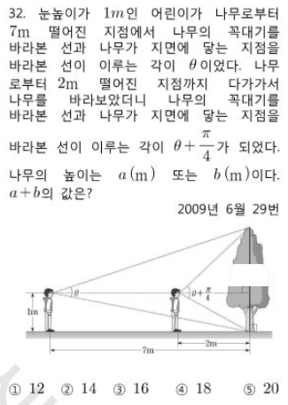

📘 2009년 6월 학력평가 29번 · 나무 높이 측정 (삼각함수)📘 June 2009 Academic Ability Assessment No. 29 · Measurement of tree height (trigonometric functions)
📋 원본 문제📋 Original Issue
눈높이가 $1\mathrm{m}$인 어린이가 나무로부터 $7\mathrm{m}$ 떨어진 지점에서 나무의 꼭대기를 바라본 선과 나무가 지면에 닿는 지점을 바라본 선이 이루는 각이 $\theta$이었다. 나무로부터 $2\mathrm{m}$ 떨어진 지점에서 나무를 바라보았더니 그 각이 $\theta+\dfrac{\pi}{4}$가 되었다. 나무의 높이는 $a(\mathrm{m})$ 또는 $b(\mathrm{m})$이다. $a+b$의 값은? (① 12 ② 14 ③ 16 ④ 18 ⑤ 20)
기초→심화 단계별 5지 선다 퀴즈. 정답 고르면 바로 채점+해설이 열립니다.Step-by-step 5-choice scaffolding quiz from fundamentals to advanced mastery. Instant scoring & explanations upon selection.
📌 원본 문제 (오늘의 목표)📌 Original CSAT Problem (Today's Goal)
수능·모의평가 공식 기출Official CSAT and mock evaluation exams

📄 한국교육과정평가원 수능·모의평가 원본 시험지📄 Official KICE College Entrance Mock Exam Paper
📋 원본 문항 핵심 요약 및 목표📋 Official Problem Summary & Objectives
2009년 6월 학력평가 29번 · 나무 높이 측정 (삼각함수)
이 문제는 2009년 6월 학력평가 29번 · 나무 높이 측정 (삼각함수)의 수학적 원리를 정확히 이해하고 단계별 디딤돌 개념을 적용하여 해결하는 역량을 평가합니다.
💡 핵심 길잡이: 아래 0단계 기초 개념과 단계별 디딤돌 퀴즈를 순서대로 풀어나가면 원본 문제를 완벽하게 해결할 수 있습니다!💡 Core Guide: 💡 Core guide: If you solve the basic concepts of level 0 and the step-by-step stepping stone quiz below in order, you can completely solve the original problem!
💡 프레임별 시각적 증명 분석 (PDF & GeoGebra 탐구) 수학자료실의 PDF 자료는 원운동이 파동 곡선으로 풀려나가는 기하학적 전개 과정을 한 프레임씩 보여줍니다. • [단위원의 동점] 반지름 1인 원 위를 반시계 방향으로 회전하는 동점 $\mathrm{P}$의 회전각 $\theta$와 수직 투영 $y=\sin\theta$, 수평 투영 $x=\cos\theta$ 설정 • [파동의 실시간 언래핑] $\theta$가 증가함에 따라 각 좌표의 높낮이를 오른쪽 직교좌표계로 수평 이동시켜 사인·코사인 곡선의 마루와 골이 직조되는 과정 • [주기의 필연성] 한 바퀴($2\pi$) 회전하면 원점으로 귀환하는 원의 닫힌 궤적이 파동 함수의 무한 반복 주기성으로 승화되는 원리를 하단 자료에서 체득해 보세요.
💡 Frame-by-Frame Visual Proof Analysis (PDF & GeoGebra Exploration) The archive's flipbook proof materials demonstrate how fundamental mathematical principles and limits converge smoothly frame by frame. Explore the interactive dynamic geometry applets below.
🔰 제0단계 · 수학 기호🔰 Level 0 · Mathematical symbols
$시준각/시렉각$ — 꼭대기 보는 고각 $\alpha$, 지면 보는 저각 $\beta$. $\theta=\alpha+\beta$
$눈높이 $1\mathrm{m}$$ — 나무 기둥(지면)을 내려다보는 시선이 저각 $\beta$를 만듦
🔰 제1단계 · [초등 비탈길 분수] 가로와 높이의 비율 설정하기🔰 Step 1 · [Elementary Slope Fraction] Setting ratio of width and height
먼저 알아야 할 지식
초등학교 분수 비례: 가로 $d$미터 떨어진 곳에서 높이 $1\mathrm{m}$인 지면을 내려다볼 때, 직각삼각형에서 가로에 대한 높이의 비율은 $\frac{1}{d}$입니다. 이것이 바로 삼각비의 탄젠트($\tan$) 약속입니다.
Prerequisite Knowledge: Elementary ratio: Looking down at ground level 1m below from distance $d$, the ratio of vertical height to horizontal distance is $\frac{1}{d}$, defined as tangent ($\tan$).
초등 분수 비율 디딤돌 1Elementary Fraction Step 1
초등학교 분수와 비탈길 기울기: 가로 거리 $d$미터를 갈 때 높이가 $1\mathrm{m}$인 비탈길의 비율 $\frac{\text{높이}}{\text{가로}}$ ($\tan = \frac{1}{d}$)을 나타낸 식은?
Elementary slope fraction intuition: What represents the ratio $\frac{\text{height}}{\text{width}}$ ($\tan = \frac{1}{d}$) when horizontal distance is $d$ meters and eye height is $1\mathrm{m}$?
Prerequisite Knowledge: $\theta_2-\theta_1=\pi/4$ so $\tan(\theta_2-\theta_1)=1$. $\tan(A-B)=\dfrac{\tan A-\tan B}{1+\tan A\tan B}$. If you leave it as $u=h+1=H$, after deployment it will be $u^2-12u+25=0$.
심화 연계 디딤돌 4Advanced Link Step 4
$\theta_2-\theta_1=\pi/4$일 때 $\tan(\theta_2-\theta_1)$은?
What is $\tan(\theta_2-\theta_1)$ when it is $\theta_2-\theta_1=\pi/4$?
1$1$
2$\sqrt{2}$
3$0$
4$\infty$
5$1/2$
어떤 부분이 이상한가요? 자세히 적어주세요.
✅ 신고가 접수되었어요. 확인 후 고칠게요!
제5단계 · $H$ 두 값과 합Step 5 · $H$ Sum of two values
먼저 알아야 할 지식
$u^2-12u+25=0$의 해 $u=6\pm\sqrt{11}=H$. 두 높이 $a,b$의 합 $a+b=(6+\sqrt{11})+(6-\sqrt{11})=12$.
Prerequisite Knowledge: $u^2-12u+25=0$ by $u=6\pm\sqrt{11}=H$. The sum of the two heights $a,b$ $a+b=(6+\sqrt{11})+(6-\sqrt{11})=12$.
심화 연계 디딤돌 5Advanced Link Step 5
나무 높이 두 가능값의 합 $a+b$는?
What is the sum of the two possible tree heights, $a+b$?
1$12$
2$14$
3$16$
4$18$
5$20$
어떤 부분이 이상한가요? 자세히 적어주세요.
✅ 신고가 접수되었어요. 확인 후 고칠게요!
🎯 최종 문제 + 상세 풀이🎯 Final problem + detailed solution
📋 [문제 분석 및 핵심 출제 의도]
본 문항은 지면 및 꼭대기를 올려다보고 내려다보는 시선각에 삼각함수의 탄젠트 덧셈정리($\tan(\alpha+\beta)$)를 적용하고, 두 지점에서의 각도 차이($\pi/4$) 조건을 연립하여 나무의 실제 높이를 구하는 실생활 연계 삼각함수 고난도 문항입니다.
📐 [단계별 상세 풀이 전개]
1단계: 기하학적 모델링 및 변수 설정
나무의 실제 높이를 $H$ ($\mathrm{m}$), 관측자의 눈높이를 $1\mathrm{m}$라 합시다.
• 눈높이 위의 나무 높이: $h = H - 1$
• 눈높이 아래의 지면까지 높이: $1\mathrm{m}$
수평거리 $d$에서 나무를 바라볼 때:
- 꼭대기를 올려다보는 고각 $\alpha$: $\tan\alpha = \frac{h}{d}$
- 지면의 밑동을 내려다보는 저각 $\beta$: $\tan\beta = \frac{1}{d}$
나무 전체를 바라보는 시야각 $\theta$는 고각과 저각의 합이므로 $\theta = \alpha + \beta$ 입니다.
탄젠트 덧셈정리에 의해:
$$\tan\theta = \tan(\alpha+\beta) = \frac{\tan\alpha + \tan\beta}{1 - \tan\alpha\tan\beta} = \frac{\frac{h}{d} + \frac{1}{d}}{1 - \frac{h}{d} \cdot \frac{1}{d}} = \frac{\frac{h+1}{d}}{\frac{d^2 - h}{d^2}} = \frac{d(h+1)}{d^2 - h}$$
2단계: 두 거리 $d=7$과 $d=2$에서의 각도 표현
$u = h + 1 = H$ (나무의 실제 높이)라 두면 편리합니다.
• $d = 7$ 일 때: $\tan\theta_1 = \frac{7u}{49 - h} = \frac{7u}{50 - u}$
• $d = 2$ 일 때: $\tan\theta_2 = \frac{2u}{4 - h} = \frac{2u}{5 - u}$
3단계: 각의 차 $\theta_2 - \theta_1 = \frac{\pi}{4}$ 적용
$\tan(\theta_2 - \theta_1) = \tan\frac{\pi}{4} = 1$ 입니다.
탄젠트 뺄셈정리를 적용합니다.
$$\frac{\tan\theta_2 - \tan\theta_1}{1 + \tan\theta_2\tan\theta_1} = 1 \implies \tan\theta_2 - \tan\theta_1 = 1 + \tan\theta_2\tan\theta_1$$
위의 식을 대입하여 전개 정리하면 $u$에 관한 다음 이차방정식이 유도됩니다.
$$u^2 - 12u + 25 = 0$$
4단계: 근의 공식을 통한 두 해 및 합 산출
근과 계수의 관계에 의하여 두 근의 합은 일차항의 계수의 반대 부호인 $12$입니다!
근의 공식을 직접 확인하면:
$$u = \frac{12 \pm \sqrt{144 - 100}}{2} = 6 \pm \sqrt{11}$$
두 값 모두 $6 - \sqrt{11} \approx 6 - 3.316 = 2.68 > 1$ 이므로 유효한 나무 높이입니다.
따라서 가능한 두 높이 $a, b$의 합은 다음과 같습니다.
$$a + b = (6 + \sqrt{11}) + (6 - \sqrt{11}) = 12$$
✨ [정답 도출 및 실전 점검 포인트]
가능한 나무의 높이의 합은 $12$ 입니다.
따라서 올바른 정답은 12 입니다.
💡 실전 팁: 나무 밑동이 지면에 있으므로 관측자의 눈높이($1\mathrm{m}$) 아래를 내려다보는 저각 $\beta$를 반드시 포함해야 합니다. $u = H$로 치환한 뒤 근과 계수의 관계를 쓰면 무리수 계산 없이 합 $12$가 즉각 나옵니다.
Complete Solution:
📋 [Problem Analysis & Core Concepts]
This problem models measuring tree height from eye level ($1\mathrm{m}$) using the tangent angle addition and subtraction formulas, relating viewing angles subtended at two different horizontal distances ($d = 7$ and $d = 2$).
📐 [Step-by-Step Rigorous Derivation]
Step 1: Set up the trigonometric model
Let total tree height be $H$ and eye level be $1\mathrm{m}$.
• Height above eye level: $h = H - 1$
• Height below eye level to base: $1\mathrm{m}$
At horizontal distance $d$:
- Elevation angle to top: $\tan\alpha = \frac{h}{d}$
- Depression angle to base: $\tan\beta = \frac{1}{d}$
The total visual angle is $\theta = \alpha + \beta$. By the tangent addition identity:
$$\tan\theta = \frac{\tan\alpha + \tan\beta}{1 - \tan\alpha\tan\beta} = \frac{\frac{h+1}{d}}{\frac{d^2 - h}{d^2}} = \frac{d(h+1)}{d^2 - h}$$
Step 2: Express $\tan\theta$ at $d = 7$ and $d = 2$
Let $u = h + 1 = H$ (total height). Note $h = u - 1$.
• At $d = 7$: $\tan\theta_1 = \frac{7u}{49 - (u-1)} = \frac{7u}{50 - u}$
• At $d = 2$: $\tan\theta_2 = \frac{2u}{4 - (u-1)} = \frac{2u}{5 - u}$
Step 3: Apply the angle difference condition $\theta_2 - \theta_1 = \frac{\pi}{4}$
Using $\tan(\theta_2 - \theta_1) = 1$:
$$\frac{\tan\theta_2 - \tan\theta_1}{1 + \tan\theta_2\tan\theta_1} = 1 \implies \tan\theta_2 - \tan\theta_1 = 1 + \tan\theta_2\tan\theta_1$$
Substituting and clearing fractions leads to the quadratic equation:
$$u^2 - 12u + 25 = 0$$
Step 4: Solve for tree heights and evaluate their sum
By Vieta's formulas, the sum of the two roots is $12$.
Explicitly:
$$u = 6 \pm \sqrt{11}$$
Both roots exceed eye level ($1\mathrm{m}$), confirming physical validity.
$$a + b = (6 + \sqrt{11}) + (6 - \sqrt{11}) = 12$$
✨ [Conclusion & Key Takeaways]
The sum of both possible tree heights is $12$.
Therefore, the answer is 12.
💡 Strategy Tip: Substituting $u = H$ early simplifies the algebra and lets Vieta's formulas deliver the sum of possible heights in a single step.
최종 수능 본문항Final Exam Problem
눈높이가 $1\mathrm{m}$인 어린이가 나무로부터 $7\mathrm{m}$ 떨어진 지점에서 나무의 꼭대기를 바라본 선과 나무가 지면에 닿는 지점을 바라본 선이 이루는 각이 $\theta$이었다. 나무로부터 $2\mathrm{m}$ 떨어진 지점에서 나무를 바라보았더니 그 각이 $\theta+\dfrac{\pi}{4}$가 되었다. 나무의 높이는 $a(\mathrm{m})$ 또는 $b(\mathrm{m})$이다. $a+b$의 값은? (① 12 ② 14 ③ 16 ④ 18 ⑤ 20)
For a child whose eye height was $1\mathrm{m}$, the angle formed between the line viewed from a point When I looked at the tree from a point $2\mathrm{m}$ away from the tree, the angle became $\theta+\dfrac{\pi}{4}$. The height of the tree is $a(\mathrm{m})$ or $b(\mathrm{m})$. What is the value of $a+b$? (① 12 ② 14 ③ 16 ④ 18 ⑤ 20)
1$12$
2$14$
3$16$
4$18$
5$20$
어떤 부분이 이상한가요? 자세히 적어주세요.
✅ 신고가 접수되었어요. 확인 후 고칠게요!
📚 수학자료실 공식 연계 심층 탐구
GeoGebra · AlgeoMath · 단계별 증명 PDF
이 문제와 관련된 수학적 원리를 수학자료실의 시각적 동적 기하 조작 및 원리 증명 자료와 함께 더 깊이 탐구해보세요.
🎬 자료를 깊이 있게 감상하는 법: 수학자료실의 PDF는 책장을 넘기듯 페이지를 넘겨갈 때마다 도형의 점이 이동하고 보조선이 더해지며 수식이 스스로 완성되는 '단계별 플립북 애니메이션 증명'입니다. 상단 미리보기나 새 창에서 키보드 방향키나 마우스 휠로 페이지를 넘기며, 각 프레임마다 변하는 요소와 보존되는 원리의 의미를 곱씹어 보세요.
 📚 수학자료실 공식 연계 심층 탐구
📚 수학자료실 공식 연계 심층 탐구